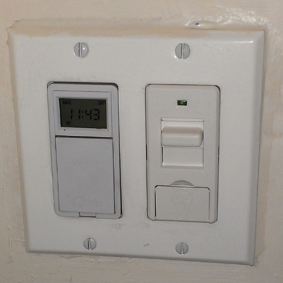
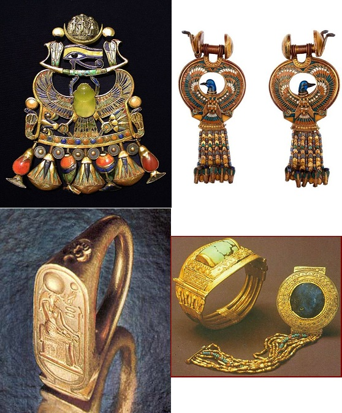

| 讀 | 默想 |
|---|---|
| 出埃及記35:1-19 | |
| 1 摩西招聚以色列全會眾，對他們說：「這是耶和華所吩咐的話，叫你們照著行： 2 六日要做工，第七日乃為聖日，當向耶和華守為安息聖日。凡這日之內做工的，必把他治死。 3 當安息日，不可在你們一切的住處生火。」  上圖：KosherSwitch是一種專利產品，用於安息日的自動開燈，自帶安息日時鐘。綠燈亮時，表示開關正處於安息日模式。Kosher的意思是「合乎潔淨的條例」 |
在百姓開始建造會幕之前，神第三次很嚴肅地吩咐要守安息日（二十8；三十一13）。因為神知道，出於天然人的熱心，會因為建造會幕而忽略安息日。正如有人時常因為事奉而忽略了身、心、靈的安息，表面上為神鞠躬盡瘁，實際上卻不被神悅納，因為「
不能進入安息是因為不信的緣故」（來三19）。 建造會幕的目的，是為了見證神與人同住（二十五8），讓人進入神的安息。而建造的人若不肯守安息日，就失去了建造的目的；到了新約，基督徒的事奉若不能進入安息，就失去了事奉的實際。凡出於肉體、沒有屬靈實際的事奉，結果是越事奉越愁苦、越事奉越沒有安息。 建造會幕是大事，安息日在人看是小事，所以人很容易為了合神心意的大事而忽略安息日。「人在最小的事上忠心，在大事上也忠心；在最小的事上不義，在大事上也不義」（路十六10），從以色列百姓的歷史可以看出，人若在安息日這樣的小事上偏離神，就會導致全然敗壞。 因為神吩咐安息日「不可在你們一切的住處生火」，所以至今正統猶太人安息日不能開燈。但他們自有變通之術，使用安息日自動開關解決了這個問題。 應用在新約的基督徒，要位在忙碌的生活中，警醒而刻意的為主日敬拜做安排，在每天的生活中，刻意安排默想神的話語的時間，享受神的同在與安息。 |
| 4 摩西對以色列全會眾說：「耶和華所吩咐的是這樣： 5 你們中間要拿禮物獻給耶和華，凡樂意獻的可以拿耶和華的禮物來，就是金、銀、銅， 6 藍色、紫色、朱紅色線，細麻，山羊毛， 7 染紅的公羊皮，海狗皮，皂莢木， 8 點燈的油，並做膏油和香的香料， 9 紅瑪瑙與別樣的寶石，可以鑲嵌在以弗得和胸牌上。」 |
屬靈建造的基礎是奉獻，是人承認神是配得奉獻的主。所以沒有奉獻，神就不開始建造，有了奉獻，建造才有基礎。以色列人在曠野建造會幕、大衛準備建造聖殿、被擄者從巴比倫回來重建聖殿，都是從百姓甘心樂意的奉獻開始的。建造會幕是如此，建造教會也是如此，屬靈的建造都需要兩種奉獻：
一種是獻上人的所有（5-9節），一種是獻上人的所能（10-19節）。 5-9節重複了二十五2-7的材料清單 ，表明摩西忠心遵照神的吩咐：「都要照我所指示你的樣式」（二十五9），所以只收神所指定的材料。 屬靈的建造只能使用神所要的材料，出於人意的「草木、禾秸」（林前三12）固然能快速建起一個大工程，但卻經不住火的試驗；唯有代表基督性情的「金、銀、寶石」（林前三12），才能用來「建立基督的身體」（弗四12），經得住火的試驗 。 太12:8： 因為人子是安息日的主。 |
| 10 「你們中間凡心裡有智慧的都要來做耶和華一切所吩咐的： 11 就是帳幕和帳幕的罩棚，並帳幕的蓋、鉤子、板、閂、柱子、帶卯的座， 12 櫃和櫃的槓，施恩座和遮掩櫃的幔子， 13 桌子和桌子的槓與桌子的一切器具，並陳設餅， 14 燈臺和燈臺的器具，燈盞並點燈的油， 15 香壇和壇的槓，膏油和馨香的香料，並帳幕門口的簾子， 16 燔祭壇和壇的銅網，壇的槓並壇的一切器具，洗濯盆和盆座， 17 院子的帷子和帷子的柱子，帶卯的座和院子的門簾， 18 帳幕的橛子並院子的橛子，和這兩處的繩子， 19 精工做的禮服和祭司亞倫並他兒子在聖所用以供祭司職分的聖衣。」 |
10-19節重複了神指定的工作內容
，表明摩西只要求人做神所要做的工作，多一點、少一點都不可以。「所求于管家的，是要他有忠心」（林前四2），無論是在真理上的懈怠、還是偏離真理的熱心，都不是忠心，結果是用人意代替山上的樣式，會把會幕的敬拜服事變成拜偶像。
現代猶太人在安息日的參考影片： 現代猶太人在安息日可以去合乎規定的麥當勞 https://www.youtube.com/watch?v=ztLQsnlES8U |
| 禱告：親愛的天父上帝，祢是安息日的主。祢藉著摩西吩咐百姓，要建造會幕，在建造之前，特別提醒百姓要在服事之中，遵守安息日。藉著這經文，祢也提醒我們，要將主日敬拜、小組聚會、個人靈修的時間分別為聖。所有的事奉和工作，都是為了享受主祢的同在、滿足與安息。親愛的主耶穌，祢道成肉身成為人子，也提醒門徒，人子是安息日的主。主阿，懇求祢赦免我有時忽略了主日敬拜、小組聚會、每天靈修。親愛的聖靈，在工作、服事的忙碌中，有時我會覺得煩躁，求祢時刻提醒我，祢是與我同在的神，使我在忙碌中，心裡仍然得享祢所賜的安息。奉耶穌基督的名禱告，阿們。 | |
| 出埃及記35:20-35 | |
| 20 以色列全會眾從摩西面前退去。 21 凡心裡受感和甘心樂意的都拿耶和華的禮物來，用以做會幕和其中一切的使用，又用以做聖衣。 22 凡心裡樂意獻禮物的，連男帶女，各將金器，就是胸前鍼、耳環（或譯：鼻環）、打印的戒指，和手釧帶來獻給耶和華。 | 古埃及人非常重視首飾，金子製作的「胸前針、耳環、打印的戒指，和手釧」非常精美而貴重。以色列人在埃及為奴幾百年，終於得著這些看得見摸得著的好處，但他們計算代價之後，卻都「甘心樂意」（21節）地「帶來獻給耶和華」。 這些原本只知道跟隨眼睛看得見的「以色列全會眾」（20節），經過了神兩次「四十晝夜」（二十四18；三十四28）的試驗和赦免的恩典，終於能甘心樂意地站在奉獻的地位上，把看得見的美物奉獻給那看不見的神。他們寧願放棄自己所喜悅的，也要得著神的喜悅；寧願放棄所領受的恩典，也要得著那賜恩典的神。這正是神所要得著的人，他們「不是顧念所見的，乃是顧念所不見的」（林後四18 ）。 能夠知道要甘心樂意的奉獻。是因為知道自己所擁有的一切都是來自於上帝的恩典。 |
| 23 凡有藍色、紫色、朱紅色線，細麻，山羊毛，染紅的公羊皮，海狗皮的，都拿了來； 24 凡獻銀子和銅給耶和華為禮物的都拿了來；凡有皂莢木可做甚麼使用的也拿了來。 25 凡心中有智慧的婦女親手紡線，把所紡的藍色、紫色、朱紅色線，和細麻都拿了來。 26 凡有智慧、心裡受感的婦女就紡山羊毛。 27 眾官長把紅瑪瑙和別樣的寶石，可以鑲嵌在以弗得與胸牌上的，都拿了來； 28 又拿香料做香，拿油點燈，做膏油。 29 以色列人，無論男女，凡甘心樂意獻禮物給耶和華的，都將禮物拿來，做耶和華藉摩西所吩咐的一切工。 |
下圖：古埃及第十八王朝法老圖坦卡蒙（Tutankhamun，主前1332-1323年在位）墓中出土的胸前針、耳環、打印的戒指、手釧
，非常精美。
 百姓「甘心樂意獻禮物給耶和華」，整個以色列都各盡所有、各盡所能，既甘心樂意地奉獻材料，也甘心樂意奉獻自己，成為一個團體的見證 。 |
| 親愛的天父上帝，我感謝祢。以色列百姓雖然毀約。但祢仍然願意給他們機會重新立約。以色列百姓。心裡受感動。甘心樂意獻上禮物，按照主上帝祢的計畫與旨意，用來建造會幕和一切敬拜用的物件。這個時候，以色列百姓成為一個樂意奉獻，而能夠向外成為一個團體的見證。能夠見證主上帝祢的全能與榮耀。親愛的天父上帝。我也來到祢的面前向祢表明。我也願意將自己獻上當作活祭。成為一個按照祢的旨意，按照祢的心意來事奉與敬拜的人。奉耶穌基督的名禱告，阿們。 | |
| 出埃及記35章30節～36章7節 | |
| 30 摩西對以色列人說：「猶大支派中，戶珥的孫子、烏利的兒子比撒列，耶和華已經題他的名召他， 31 又以 神的靈充滿了他，使他有智慧、聰明、知識，能做各樣的工， 32 能想出巧工，用金、銀、銅製造各物， 33 又能刻寶石，可以鑲嵌，能雕刻木頭，能做各樣的巧工。 34 耶和華又使他，和但支派中亞希撒抹的兒子亞何利亞伯，心裡靈明，能教導人。 35 耶和華使他們的心滿有智慧，能做各樣的工，無論是雕刻的工，巧匠的工，用藍色、紫色、朱紅色線，和細麻、繡花的工，並機匠的工，他們都能做，也能想出奇巧的工。 | 35:30 摩西對以色列人說：「猶大支派中，戶珥的孫子、烏利的兒子比撒列，耶和華已經題他的名召他，31 又以 神的靈充滿了他，使他有智慧、聰明、知識，能做各樣的工，32 能想出巧工，用金、銀、銅製造各物，33 又能刻寶石，可以鑲嵌，能雕刻木頭，能做各樣的巧工。34 耶和華又使他，和但支派中亞希撒抹的兒子亞何利亞伯，心裡靈明，能教導人。35 耶和華使他們的心滿有智慧，能做各樣的工，無論是雕刻的工，巧匠的工，用藍色、紫色、朱紅色線，和細麻、繡花的工，並機匠的工，他們都能做，也能想出奇巧的工。 |
| 36:1 「比撒列和亞何利亞伯，並一切心裡有智慧的，就是蒙耶和華賜智慧聰明、叫他知道做聖所各樣使用之工的，都要照耶和華所吩咐的做工。」 36:2 凡耶和華賜他心裡有智慧、而且受感前來做這工的，摩西把他們和比撒列並亞何利亞伯一同召來。 36:3 這些人就從摩西收了以色列人為做聖所並聖所使用之工所拿來的禮物。百姓每早晨還把甘心獻的禮物拿來。 36:4 凡做聖所一切工的智慧人各都離開他所做的工， 36:5 來對摩西說：「百姓為耶和華吩咐使用之工所拿來的，富富有餘。」 36:6 摩西傳命，他們就在全營中宣告說：「無論男女，不必再為聖所拿甚麼禮物來。」這樣才攔住百姓不再拿禮物來。 36:7 因為他們所有的材料夠做一切當做的物，而且有餘。 | 人所發起的工作，需要人來選拔、發動、訓練人才，募集資金，並用各種「人力資源管理」和「工程項目管理」的方法來保證工作的完成，結果卻常常事與願違。 神所發起的工作，神自己負責呼召人，「賜他心裡有智慧」（2節），引導他們「照耶和華所吩咐的做工」（1節），確保建造不走樣，並且讓奉獻「豐富有餘」（5節）。所以主說：「我的軛是容易的，我的擔子是輕省的」（太十一30）。人若「為神做工」，結果都是勞苦愁煩；人若「與神同工」（林前三9），「心裡就必得享安息」（太十一29）。 百姓真正認識並經歷了神救贖和赦免的恩典（三十四6-7），所以每天都生發感恩之心，「每早晨還把甘心獻的禮物拿來」（3節），不但「夠做一切當做的物，而且有餘」（7節）。在感恩奉獻上斤斤計較的人，都是因為沒有真正認識自己的罪，所以也體會不到神救贖與赦免之恩的寶貴，因為「那赦免少的，他的愛就少」（路七47）。 |
 上圖：古埃及第十八王朝TT181號墓（主前1390-1349年）壁畫上工匠的工作場面，現藏於紐約大都會博物館。可以看出當時已經有非常精巧的工匠技術。 | |
| 禱告：親愛的天父上帝，祢是呼召人的神。祢提名呼召了比撒列，以祢的靈充滿了他，使他有智慧聰明知識，做各樣服事的工作。祢也呼召了亞何利亞伯以及心裡有智慧、而且受感前來做工的人。在教會中，祢呼召了祢的兒女，成為執事、小區長、小組長。（請提名為教會的執事、小區長、小組長代禱，請為他們下面五方面祝福禱告。也為自己能參與服事代禱。） 1.身體（Body）：身體健康，充滿活力。 2.工作（Labor）：工作勝任，維持需求。 3.心理（Emotion）：心情愉快，喜樂平安。 4.社交（Social）：與人和好，友誼堅固。 5.靈命（Spirit）：聖潔良善，順服信靠。 主耶穌阿，祢所呼召的，祢必供應他完成服事祢所需要的一切，並且富足有餘，感謝祢豐富的供應。奉耶穌基督的名禱告，阿們。 | |